Dark collection 11–20
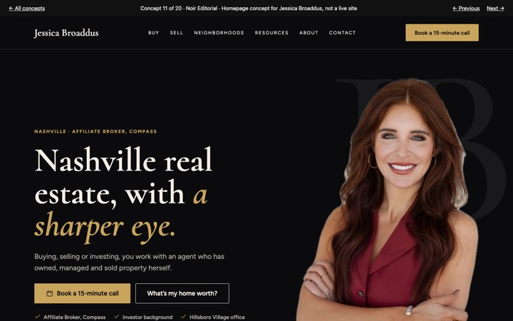
Noir Editorial
Black, ivory and gold, with Jessica cut out over a giant monogram.
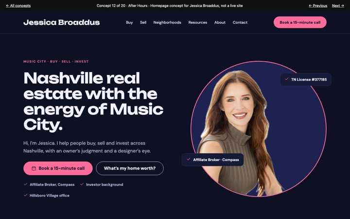
After Hours
Indigo and neon pink, Music City energy, Jessica framed in a spotlight.
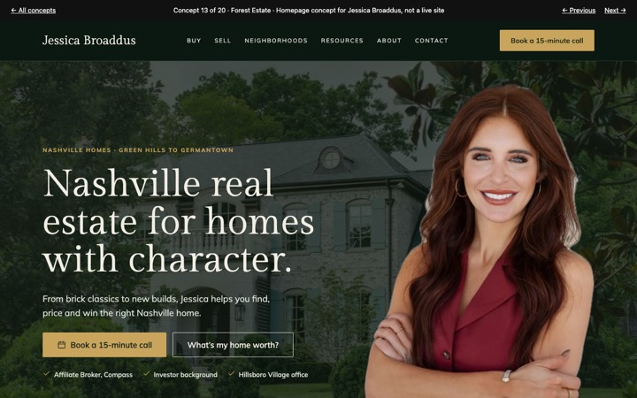
Forest Estate
Deep green and brass over one of her Belle Meade photos.
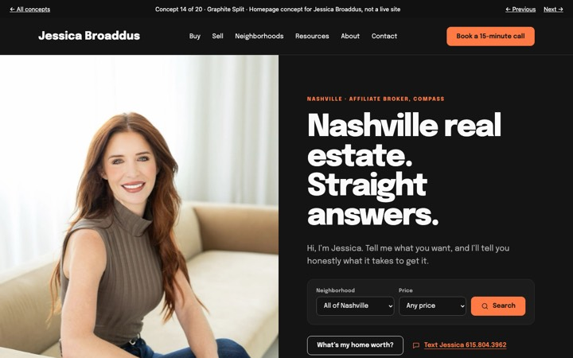
Graphite Split
Half portrait, half search. Straight answers, orange accents.
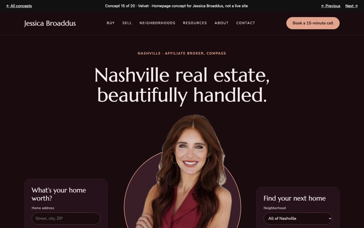
Velvet
Burgundy and rose gold, centered, with quick forms on either side.
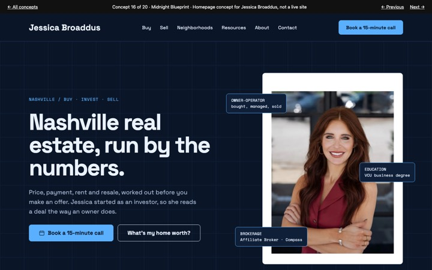
Midnight Blueprint
Navy grid and data tags, with the calculator up front.
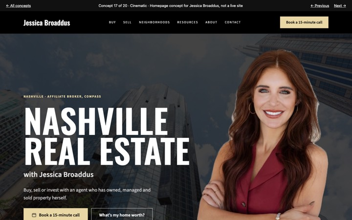
Cinematic
Downtown at night behind giant condensed type.
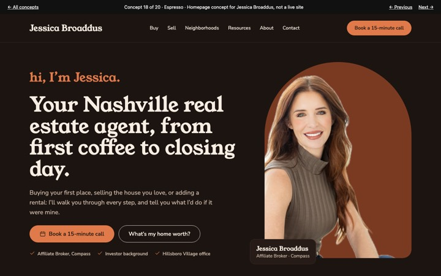
Espresso
Warm dark brown and terracotta, friendly, Jessica in an arch.
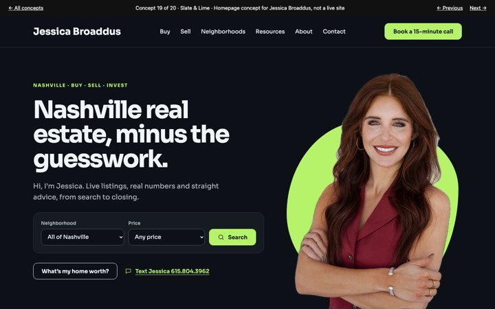
Slate & Lime
Tech-dark with a lime shape behind Jessica and search in the hero.
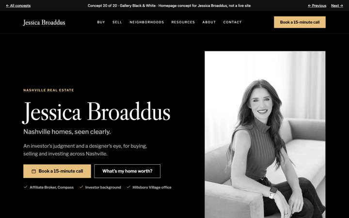
Gallery Black & White
Pure black and monochrome photography, museum-quiet.
Light collection 01–10
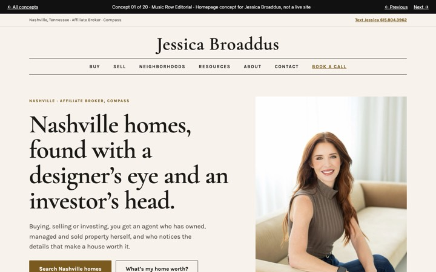
Music Row Editorial
Magazine layout with an elegant index of Nashville neighborhoods.
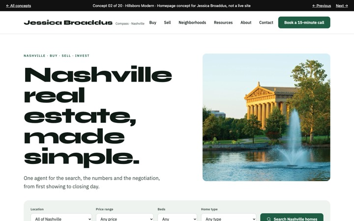
Hillsboro Modern
Clean and fast: a big home search and four smart tool tiles.
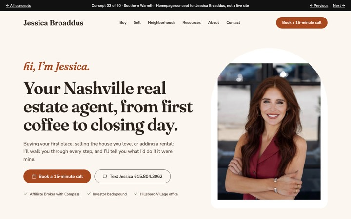
Southern Warmth
Friendly and personal, opening with “hi, I’m Jessica.”
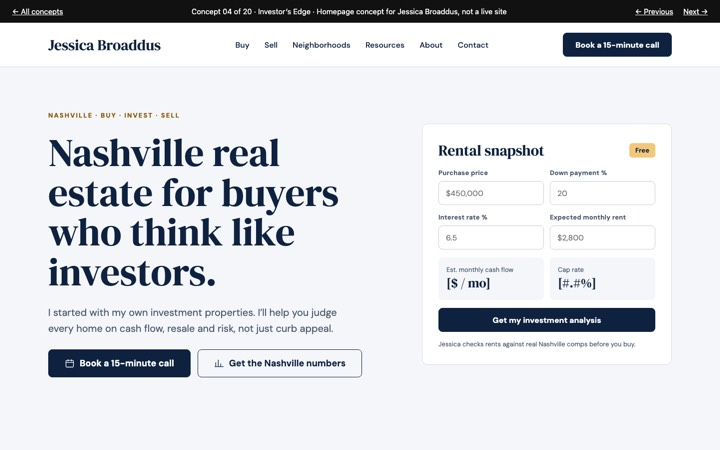
Investor’s Edge
Built on her investor background: rental numbers and strategies.
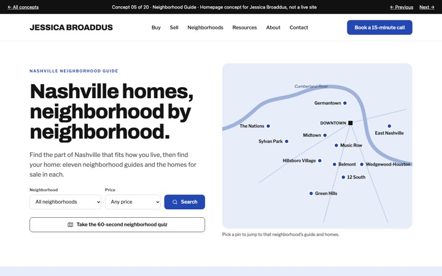
Neighborhood Guide
A stylized Nashville map with guides to eleven neighborhoods.
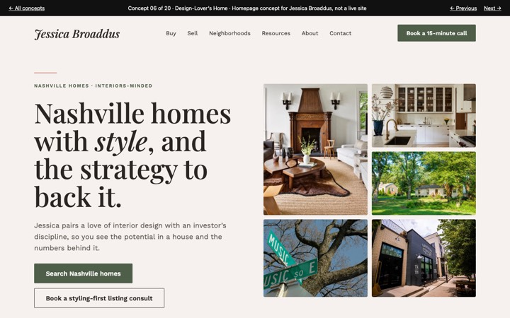
Design-Lover’s Home
Interiors-led: sell with style, buy with vision.
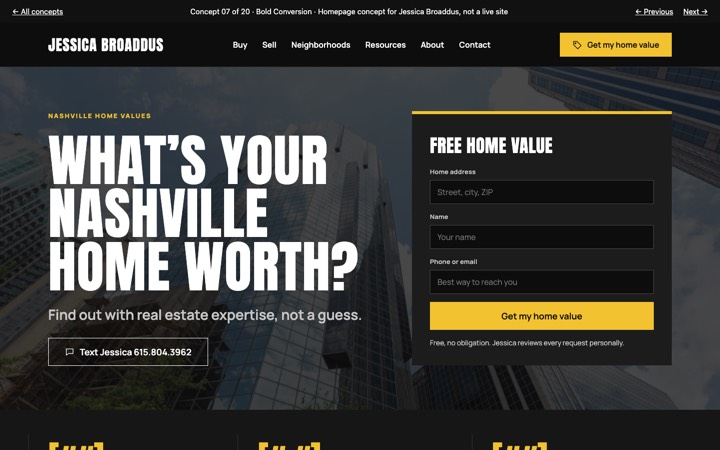
Bold Conversion
High contrast, with a home-value form front and center.
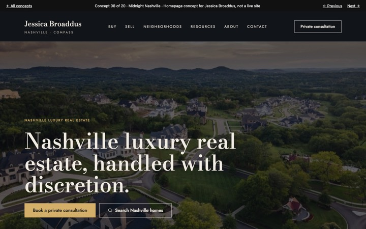
Midnight Nashville
Dark luxury with private-client services.
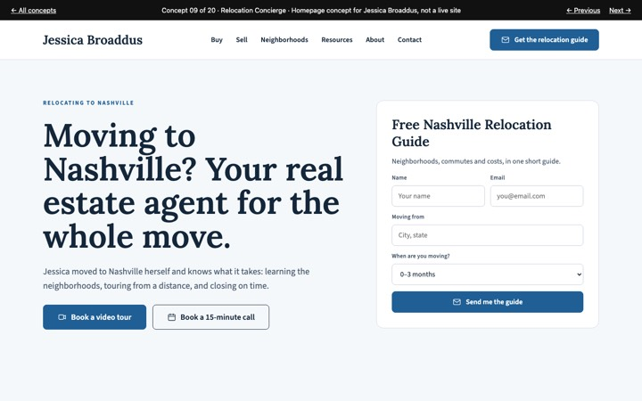
Relocation Concierge
For people moving to Nashville: guide, video tours, timeline.
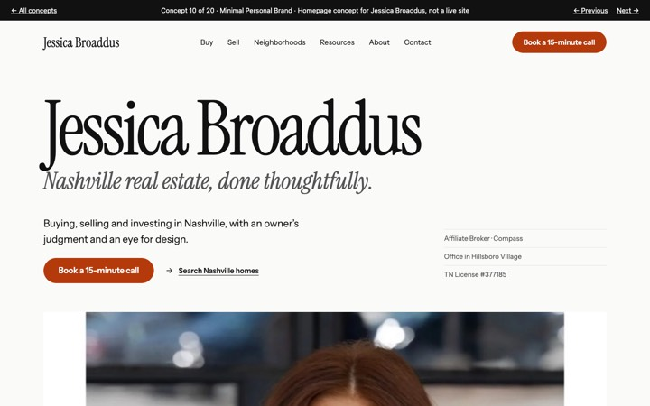
Minimal Personal Brand
Her name, big type, lots of air, and an Instagram grid.